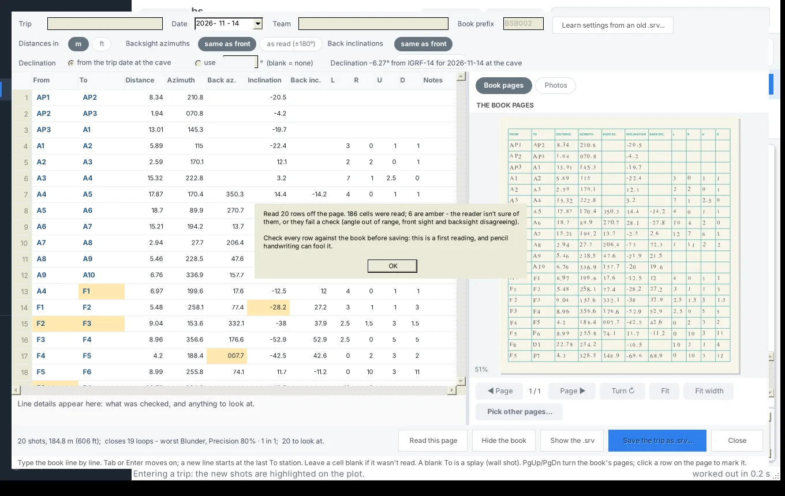
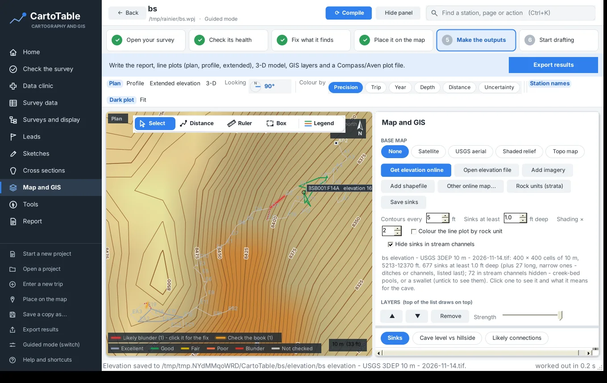

Free · Windows · inside Topside
CartoTable
From the field book to the finished map.
Cave survey data, cartography and GIS in one program. It opens the survey you already have, finds what's wrong with it, and takes you through to plates, cross sections and the cave on the ground.

Why it exists
Cave cartography without the wall of menus.
Cave survey data, cartography and GIS in one program. Open a Walls, Compass, Survex or Therion project and CartoTable checks it, tells you in plain words what's wrong and what fixing it gains, and takes you through to plates, cross sections and the cave on the ground.
Built because the software has been the hardest part of becoming a cave cartographer. No drop-down menus: every page is named on the left, every action is a button where you need it, and Ctrl+K finds anything by typing. Pick Guided for a step bar that says what to do next, or Experienced for the statistics.


It finds the blunders, and shows you the fix first.
Compile (F5) adjusts the whole survey and grades every loop as a plain "misses by 1 ft in every N", from Excellent to Blunder. Likely blunders are drawn red, legs to check in the book amber. For each one, Try it shows what the survey would look like with the corrected reading; Apply changes the survey file after you confirm, keeps the old one, and can be undone.

It reads the book page. You check it.
Photograph the book's data page and CartoTable reads the numbers into the grid, marking in amber any it isn't sure of or that fail a check. Or type it line by line with the page on screen. Every line is checked against the whole cave as you finish it: front and back sights that disagree, backsights booked the wrong way round, repeats, tie-ins. Save it and CartoTable writes a complete Walls file and adds it to the project.

A cross section at every station.
Square to the passage, shaped from splays where they were shot and from the LRUDs where they weren't, with the bedding tilted to its apparent dip on each section. Saved as a plate SVG, ready for drafting.

The cave on the ground.
Load a lidar or elevation model and get hillshade, local relief, sky view and contours. The sinkhole finder ranks every hollow by how it relates to the passage and the open leads. See where each passage's level meets the hillside, lay in rock units, and find passage ends that come close to other passage through the rock.

Book pages, sorted and checked.
Drop in a folder of phone photos of the book. CartoTable sorts them into trips, makes one PDF per trip, and puts the book beside the survey file so you can check one against the other. Scanned sketches are laid under the plan from the stations you mark on them.

One bad loop, taken apart.
The Loop inspector shows a loop on its own, banded by field book, and ranks what would close it: a single misread number, or a whole trip's compass, clino or tape off by a constant. When nothing explains it, it says which legs to re-shoot.
Opens Walls · Compass · Survex · Therion Writes all four, plus plan, profile and extended-elevation SVG · cross-section plates · 3-D model · shapefiles · GeoJSON · KML · GPX · CSV · a printed map sheet (PNG, PDF) · the survey report
Two ways to work
Guided for your first map. Experienced for your fortieth.
The first time it opens, CartoTable asks how you want to work. Switch any time; the data never changes.
A10 to fly to that station.Drafting
Sketches, sections and plates.
- Sketches under the plan. Mark a few stations on a scanned page and it's laid under the survey. Whole sheet keeps the page intact and readable; Smooth bend, Station by station, Shingle and Strips handle rough sketches and pages with more than one drawing. Each page shows how well its marks fit.
- Cross sections. One at every station, from splays or LRUDs, with the bedding at its apparent dip on each section's plane.
- Plan, profile and extended elevation as layered SVG at a true scale, ready for Illustrator or Inkscape.
- Leads. Every lead in the notes, nearest the entrance first, with height and size; tick them off as they're pushed.
- History. Footage by year and surveyor, and the cave as it stood on any survey date.
Files
Works with what you already have.
Free
Topside and CartoTable, one download.
Windows 10 and 11; Topside for Mac in beta. After the first install, Topside updates itself.